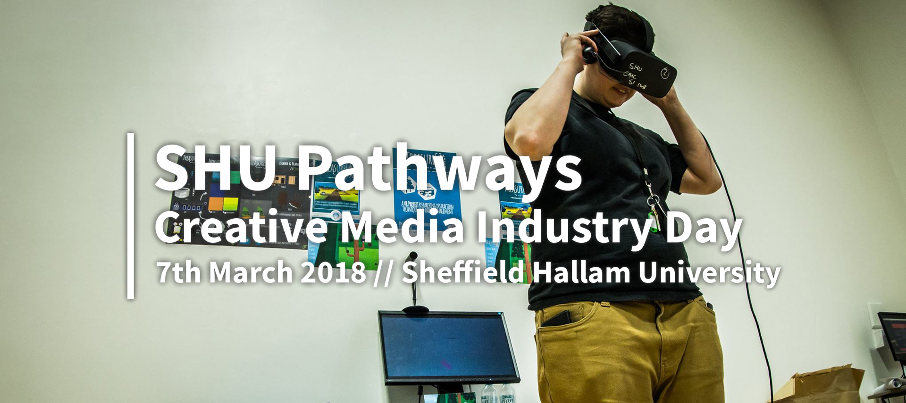
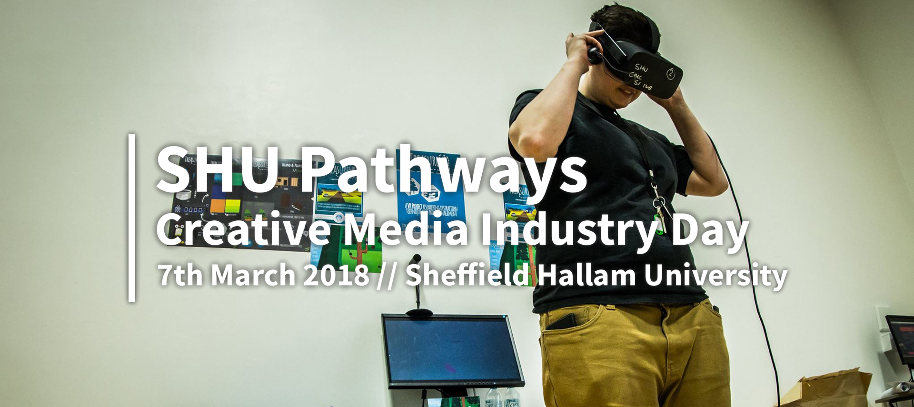

BBC Breakfast host and Football Focus presenter, Dan will be a familiar face to most of you. He began his career at Hallam FM after studying at University of Sheffield! Hear Dan’s tips on how to make a career in television, there are sure to be plenty of good stories along the way.


 
